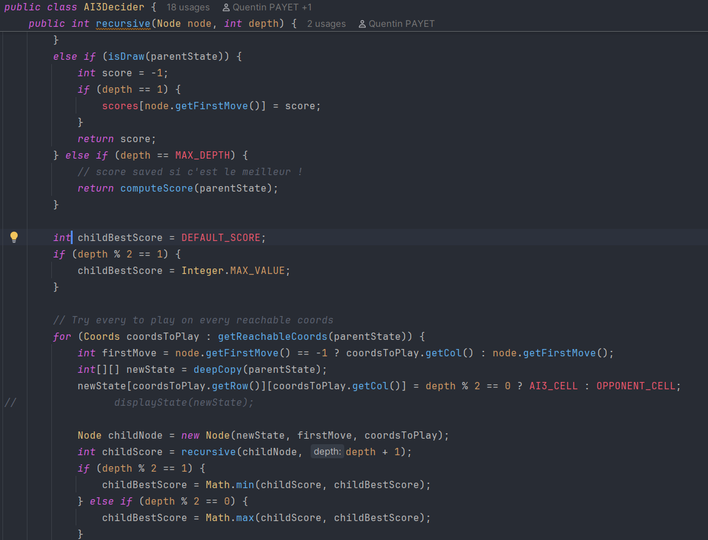
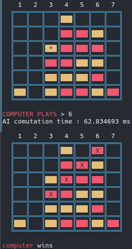
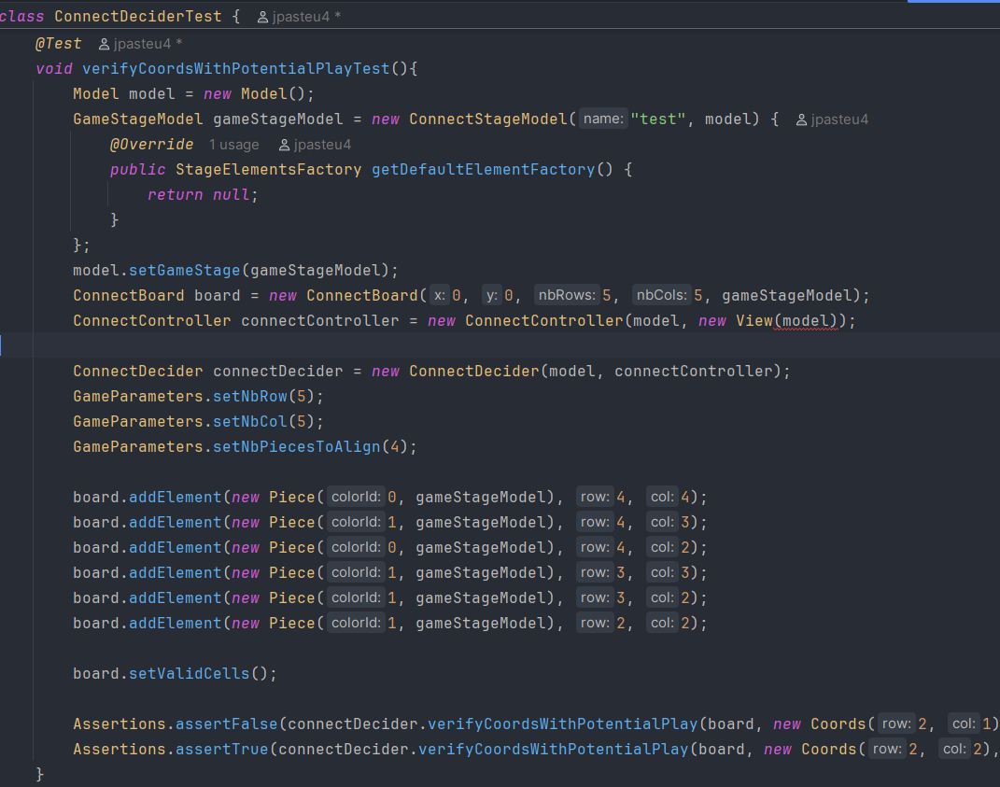
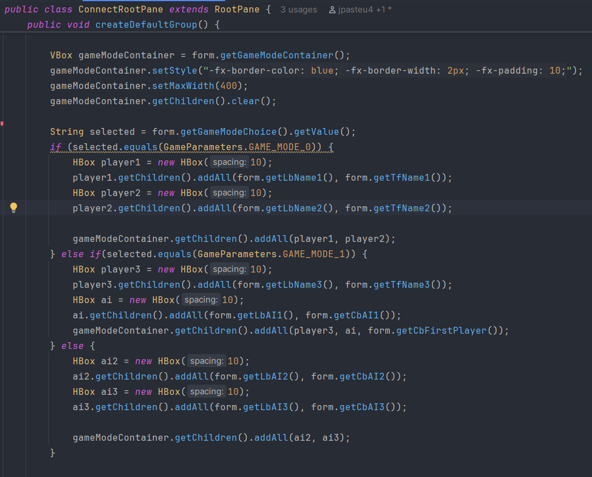

Création d'un panier et d'un système de commentaires de chaque produits
Ajout de la possibilité de créer un compte pour sauvegarder ses données
Ajout de la possibilité de mettre un article en favori
Jeu puissance X
Développé en Java en programmation orientée objet (POO) et suivant le paradigme MVC
Puissance 4 avec taille de la grille adaptable
Nombre de pions à aligner adaptable
Implémentation de plusieurs intelligences artificielles
Entièrement testé avec JUnit
Mise en place d'un mode graphique avec JavaFX
Puissance X
Ce projet était très intéressant et m'a offert une grande percepective
d'amélioration dans l'algo en général, dans
la
connaissance du langage java, mais aussi en travail de groupe. J'ai beaucoup aimé voir le jeu
s'améliorer
petit à petit au fur et à mesure. On voyait d'abord les IAs s'améliorer, puis le mode graphique,
c'était très
gratifiant.
Implémentation d'intelligences artificielles
Cette fonction illustre notre réflexion sur notre meilleure IA, capable de prévoir plusieurs coups à
l'avance
en imaginant, à l'aide de matrices représentant la grille, tous les coups qui suivront ses différents
choix
possibles. Elle fait aussi ses choix en fonction d'un calcul de score pour chaque case à l'image de la
première
IA. Ce calcul est basé sur le nombre de potentielles victoires offertes par un coup.


Ici, on voit deux états du plateau de jeu en mode joueur contre IA. On peut constater que l'IA a fait une
fourchette au joueur adverse, l'obligeant à bloquer un coup sans pouvoir empêcher sa victoire. Cette
image était
le mode graphique, qui était propre et testé avec JUnit.
Les tests unitaires avec JUnit :

Cette fonction représente l'une de nos fonctions de test, permettant d'assurer que toutes les situations
étaient prises en compte. On peut voir que pour chacune de ces fonctions, un exemple de plateau, pour
effectuer les tests.
Cette fonction représente une autre de nos fonctions de test, permettant, elle, de vérifier si les
calculs
plusieurs coups à l'avance des IA choisissait les bonnes coordonnées sur le plateau, afin de n'avoir
aucune
erreur dans ses choix.
Le mode graphique :
On voit ici le formulaire de création de partie, permettant au joueur de choisir le mode de jeu, la
taille de
la grille et le niveau de l'IA qu'on affronte (si on affronte une IA). Le contenu du rectangle bleu
change en
fonction du choix du mode de jeu. Tout ce formulaire est entièrement fait avec JavaFX en MVC. Il
apparaît dès
qu'une partie est lancée.

Ce morceau de code est une partie de la vue du formulaire, dans laquelle on voit les trois possibilités,
selon le choix du mode. Le contrôleur permet de le modifier de façon instantanée, sans avoir à modifier
la page.
Ce screenshot nous permet de visualiser le jeu à son état quasiment final. On voit que la partie est
terminée,
les 4 pièces gagnantes sont surlignées et une alerte informe le nom du gagnant. On peut aussi voir les
conteneurs en haut à droite, depuis lesquels on peut drag une pièce de la bonne couleur et la drop au
bon
endroit. Voilà une vidéo de démonstration :
Site e-commerce
Ce projet était très intéressant et m'a offert une grande percepective
d'amélioration dans l'algo en général, dans
la
connaissance du langage java, mais aussi en travail de groupe. J'ai beaucoup aimé voir le jeu
s'améliorer
petit à petit au fur et à mesure. On voyait d'abord les IAs s'améliorer, puis le mode graphique,
c'était très
gratifiant.
Implémentation d'intelligences artificielles
Cette fonction illustre notre réflexion sur notre meilleure IA, capable de prévoir plusieurs coups à
l'avance
en imaginant, à l'aide de matrices représentant la grille, tous les coups qui suivront ses différents
choix
possibles. Elle fait aussi ses choix en fonction d'un calcul de score pour chaque case à l'image de la
première
IA. Ce calcul est basé sur le nombre de potentielles victoires offertes par un coup.
Ici, on voit deux états du plateau de jeu en mode joueur contre IA. On peut constater que l'IA a fait une
fourchette au joueur adverse, l'obligeant à bloquer un coup sans pouvoir empêcher sa victoire. Cette
image était
le mode graphique, qui était propre et testé avec JUnit.
Les tests unitaires avec JUnit :
Cette fonction représente l'une de nos fonctions de test, permettant d'assurer que toutes les situations
étaient prises en compte. On peut voir que pour chacune de ces fonctions, un exemple de plateau, pour
effectuer les tests.
Cette fonction représente une autre de nos fonctions de test, permettant, elle, de vérifier si les
calculs
plusieurs coups à l'avance des IA choisissait les bonnes coordonnées sur le plateau, afin de n'avoir
aucune
erreur dans ses choix.
Le mode graphique :
On voit ici le formulaire de création de partie, permettant au joueur de choisir le mode de jeu, la
taille de
la grille et le niveau de l'IA qu'on affronte (si on affronte une IA). Le contenu du rectangle bleu
change en
fonction du choix du mode de jeu. Tout ce formulaire est entièrement fait avec JavaFX en MVC. Il
apparaît dès
qu'une partie est lancée.
Ce morceau de code est une partie de la vue du formulaire, dans laquelle on voit les trois possibilités,
selon le choix du mode. Le contrôleur permet de le modifier de façon instantanée, sans avoir à modifier
la page.
Ce screenshot nous permet de visualiser le jeu à son état quasiment final. On voit que la partie est
terminée,
les 4 pièces gagnantes sont surlignées et une alerte informe le nom du gagnant. On peut aussi voir les
conteneurs en haut à droite, depuis lesquels on peut drag une pièce de la bonne couleur et la drop au
bon
endroit. Voilà une vidéo de démonstration :